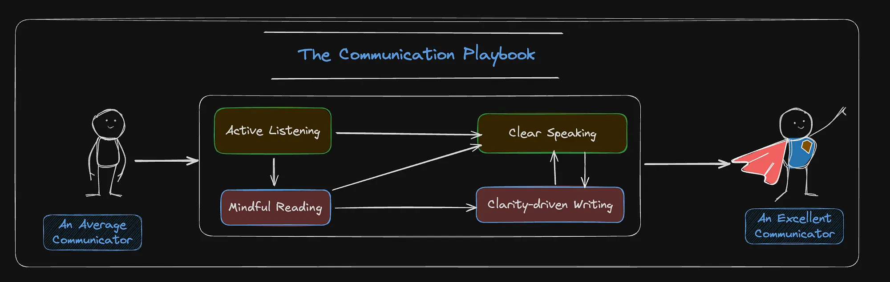
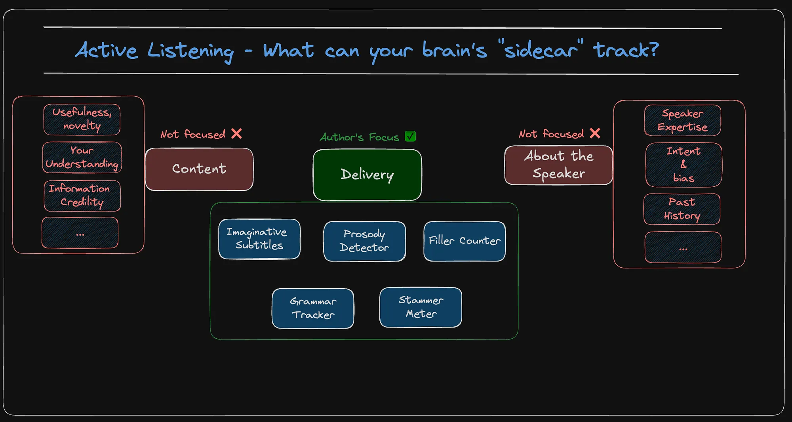
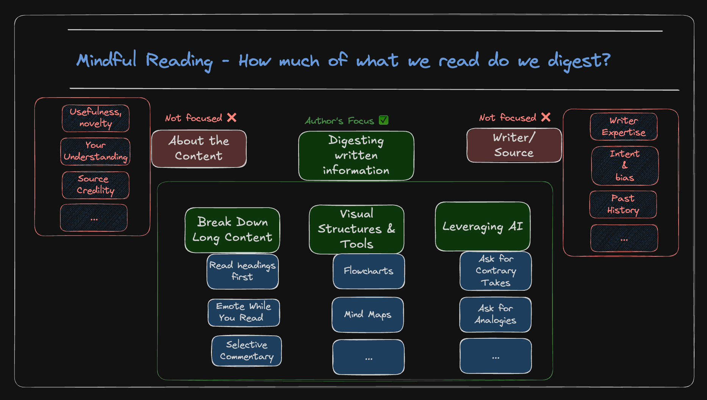
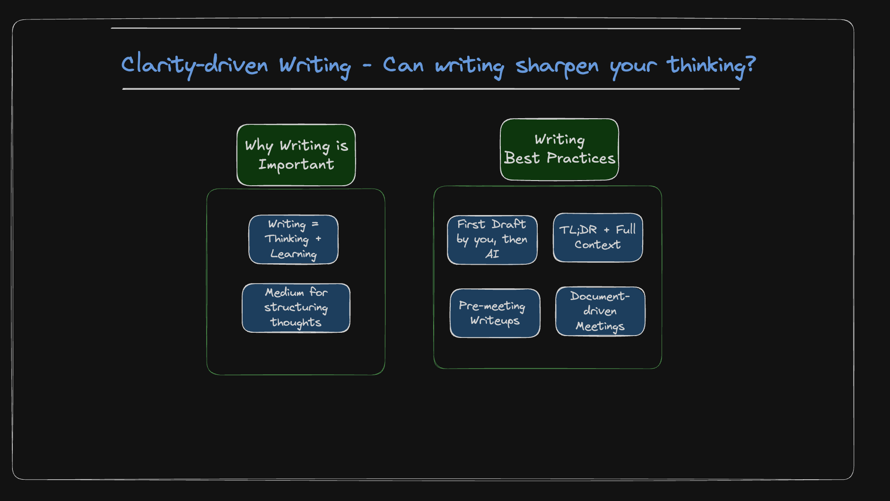
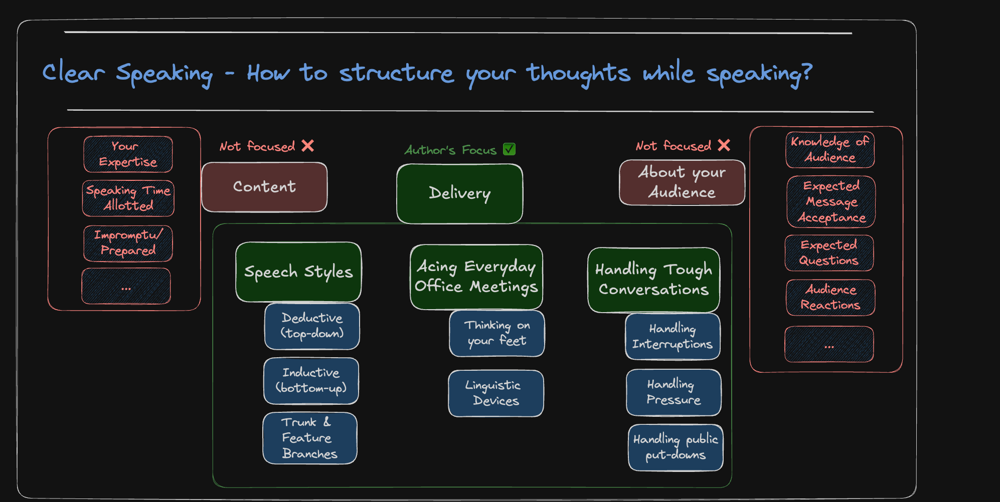
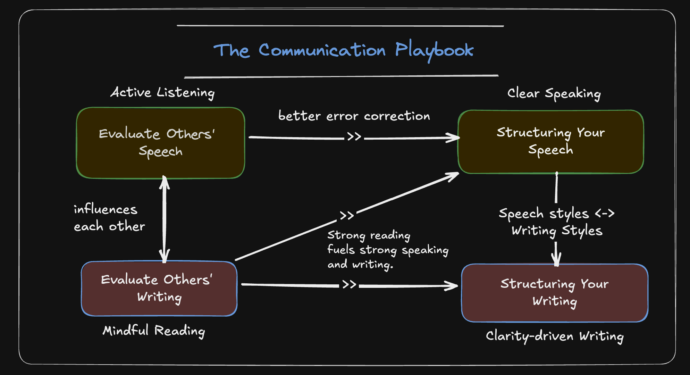

If you prefer reading this in my Medium Post: How to Ace Formal Communication in the AI Era
Why am I even speaking on this topic?
- Once upon a time, 15 years ago ….
- I started my role as a Market Research Analyst in a Procurement-focused Management Consultancy Firm.
- Typically, a Management consultancy has a team of Consultants and an army of Market Research (MR) Analysts.
- My first company combined the role of both Consultant and MR Analysts into one.
- As a Consultant and a MR Analyst, I had a ton of opportunities to hone my communications skills

Why am I even speaking on this topic?
- 💼 My Career: If I were an Asset Management Company, I’d have primarily invested in momentum funds.
- 🔄 Career Transitions from one momentum to another: Management Consulting → Analytics → Data Science → Deep Learning → Generative AI
- 🥖🧈 Early Roles: My bread and butter in the first two roles - Management Consultancy and Analytics - depended heavily on communication skills!
- I made cold-calls, sent lots of cold emails, prepared tonnes of reports and gave an equally substantial report explanation calls to clients in senior levels
The Four Pillars
Active Listening 👂
Mindful Reading 📖
Deliberate Writing ✍️
Clear Speaking 🗣️
Your mind voice: “Just fancy, empty adjectives 🫙”
But really, it’s about making everything active and intentional
Practical tips and hacks coming up in the next slides 🚀
What does it take to become a better communicator?
- All four forms of communication are deeply interconnected 🔗
- Better listeners become better speakers 👂➡️🗣️
- Better readers become better writers 📖➡️✍️
- Strong writers often become strong speakers — and vice versa 🔄
1. Active Listening

Typical Instructions for Active Listening
🧘 Be present
🤔 Stay curious
👍 Acknowledge (nodding, verbal cues)
🔁 Reflect in your own words
Thanks, but no thanks 🙅
These tips are hard to practice—especially for boring topics 😅
Listening - With Imaginative Subtitles

Activate Imaginative Subtitles
My go-to active listening hack for boring topics:
🎬 Run a mental subtitle track
- Words scroll across your mind’s screen on a black background
- In a cursive, homebrew-style font
- Sprinkled with emojis 🥤✨
📝 Make nouns stand out in bold and spice up adjectives with italics
Listening - With Spectrogram

Listening — With Spectrogram 🎶
- In your imaginative Netflix mind, let the bottom strip run a
Spectrogram📊 - Actively notice every inflection in speech instead of just absorbing it subconsciously 🎧
- Is the delivery fiery like Virat Kohli 🔥 or calm like Dhoni 🧑🏼✈️🆒?
- Use it to gauge the passion in the speech — flat, wavy, smooth, evocative, or full of highs and lows 🌊
Listening — With Toastmasters-like Metrics 🎤
Side effects of running mental subtitles:
- ✅ Spot grammatical slips
- 🔢 Track filler words — the classic “Ah Counter” (my favorite!)
- 🔁 Notice stammering or repeated sentence starts
Listening as Toastmasters — Grammar ✍️
- Common slip-ups: “I can able to…”, “She did not completed this …” ❌
- Unless you’re Sachin 🏏 or ARR 🎶, speaking correctly matters in the long run ✅
Listening as Toastmasters — Ah Counter 🔢
- My favorite metric: the Ah Counter! 🎯
- Filler words like “like”, “you know”, “but umm…” 🙃
Listening as Toastmasters — Crutch Phrases 🪃
- Common fillers: “Actually”, “At the end of the day…”, “Honestly speaking…” 🗨️
- Are some of these phrases being overused? 🤔
Listening as Toastmasters — Stammering ⏸️
- Examples: “I-I-I think we should…” or “So, so, so the plan is…” 🗣️
- Often caused by rushing thoughts or ideas racing ahead of words 🏃💭
Why Toastmasters-like Active Listening? 🎧✨
- It’s not about finding faults 🤦♂️💥
- These hacks help you become less self-critical ❤️🔥
- Nobody’s perfect—and that’s perfectly okay 👌🏼
- But acknowledgment is the first step to improvement ✔️
- Often, the simplest solution is just pausing more ⏸️
Experienced Listener — Inferring Styles from a Speech 🎯
- Deductive ⬇️ — Top-down reasoning
- Inductive ⬆️ — Bottom-up reasoning
- Git Workflow 🔀 — Branching paths and merges …
Speech Style - Deductive: Top-down Approach

- “We need to refactor the payment module [main point].
The current code has duplicated logic, poor error handling, and makes onboarding new developers difficult [details].”
- 👉 Here, the decision/action comes first, followed by supporting evidence
Speech Style - Inductive: Bottom-up Approach

- “The payment module has duplicated logic, poor error handling, and is hard for new developers to understand [details].
That’s why we need to refactor it [main point].”
- 👉 Here, the evidence builds up, and the conclusion is delivered last.
Another Good Style: Trunk and Feature Branches

Hybrid Speech Styles
Real-life: Most talks are like a hybrid of deductive-inductive.
2. Second Pillar: Mindful Reading

Importance of Writing for Better Reading Comprehension ✍️📖
- The world is flooded with content — whether from humans or AI 🌍💨
- The real question: Are we truly efficient at reading comprehension? 🤔
Mindful Reading — Breaking Down Long Reads 📚✨
- Problem:
- Long messages, reports, research papers, or documents can feel overwhelming 🤯
- Passive scanning/reading gets you nowhere ❌
- Accountable Reading Hacks:
- 📝 Headings Only — jot down one-word summaries
- 😀👎❓ Emote It — copy each para/bullet and react to it
- ✍️ Selective Self-Writing — add your own comment/summary to key sections
Mindful Reading — Visual Structures 🧩
- Use Flowcharts or Tables to simplify complex text
- Tools: Pen & Paper ✍️, Mermaid Charts 🪄, Excalidraw 🎨, Draw.io 🖥️, etc.

3. Third Pillar: Writing

My Motto on Writing ✍️✨
- Time spent writing is never wasted ⏳
- Writing is how I learn 📖
- Writing is how I think 💡
Avoid Agenda-less Meeting Invites or Hi!
- Avoid sending a meeting invite which does not have an agenda
- Never, ever send Empty “Hi/Hello” and waiting for others to respond. Always add an one-line context
The Importance of Writing Before Calling ✍️ → ☎️
- Yes, call and explain things 👥 — but prepare a pre-meeting write-up (if not for others, for yourself ).
- A short write-up before the meeting helps everyone align better ✅
Document-Driven Meetings — Any Takers? 📄🚀
- At Amazon, problem-solving meetings start with a structured written memo instead of a slide deck 📝
- The two-page memo received over 50 comments 📑📝 before the call
- The engineer felt disheartened initially 😓 but soon realized the writing and thinking required significant improvement 💡
4. Fourth Pillar: Speaking

Achieving Exceptional Speaking Skills 🎤✨
- Mastering listening, reading, and writing is key to exceptional speaking 👂📖✍️
- No matter where you are now—never underestimate your long-term potential 🚀
Meeting Room Conversations vs Public Speeches 🏢🎤
- Chasing public speaking perfection is a wrong goal (for most of us) ❌
- Nobody wants a Sashi Tharoor-style monologue in every day meeting discussions 😅
- Instead, let us focus on making everyday meeting room conversations effective!
How to Improve Meeting Room Conversations
- Improve your speech following the Toastmasters metrics
- Use the Speech Styles to make your thoughts coherent
- Practice thinking on your feet, which transfers to public speaking naturally 💡
Status Update Calls
- This is one of the most frequent calls as Software Engineers
- Let us look at the steps to master these calls
Status Update Call Template
- Starting the Update 🎬
- Acknowledging 👍
- Transitioning 🔄
- Answering Questions ❓
- Closing & Next Steps 🏁✨
Status Update Call Hacks
- Starting the Update 🎬
- “To kick things off…” 🏁
- “At a high level, here’s where we stand…” 📊
- Acknowledging 👍
- “Makes sense” ✅, “Fair point” 💡, “That adds up”, “You are right”
Status Update Call Hacks
- Transitioning 🔄
- “If we zoom out to see the big picture…” 🌐 | “If we drill deeper 🔍”
- “That brings us to the next point…” ➡️
Status Update Call Hacks
- Answering Questions ❓
- “If I read your question correctly, you are asking…” 👀
- “It’s a valid concern. I don’t have a concrete answer right now, but I’ll research and circle back.” 🔍
- Closing & Next Steps 🏁✨
- “Here’s what we’ll tackle next…” 📌
- “I’ll follow up with an email …” ✉️
How to handle difficult conversations
Some Funny quotes
When Someone Puts A Gun to Your Head 🔫

Why Sheldon does not use cuss words

Like a Tree Standing in a Torrential Downpour

Handling Difficult Conversations — Scenarios ⚡️
- Scenario 1: Person A interrupts you midway — how do you respond? 🤔
- Scenario 2: Person A pressures you with an unwise timeline — what’s your move? ⏳
- Scenario 3: Person A puts you down publicly — how would you tackle it? 💬
1. Person A interrupts you midway — how do you respond? 🤔
- Calm Assertive Pushback
- Calm Assertive Pushback
- Hold that thought—let me finish this and then we’ll come to it.
- Defusing the heat
- Defusing the heat
- I hear you, I was coming around to that point anyway
2. Person A pressures you with an unwise timeline — what’s your move? ⏳
- Buying Time Without Sounding Defensive
- I’d prefer to give you a realistic answer, not a rushed one — let me circle back by tomo.
- Acknowledging Pressure, But Reframing
- I understand the urgency, At the same time, I want to make sure we don’t cut corners.
3. Person A puts you down publicly — how would you tackle it? 💬
- Acknowledge but Reframe
- I hear your concern. I think it’s best we look at the
and resolve the issue
- Take the High Ground but still Reframe
- Thanks for the feedback. But I am avoiding explaining my past efforts to keep this discussion constructive. I’d rather want to look at future steps of resolution
Conclusion
What does a good communicator need?

Have a holistic goal on communication
- Great communicators aren’t just good talkers — they’re good processors of information.
- That’s why the quieter skills (listening, reading and note-taking) matter just as much as the noticeable one (speaking). Never strive just for public speaking.
- Keep track of how you communicate and how others do too
From Toastmasters-style metrics to speech-structure frameworks (deductive, inductive, trunk-feature), you have now seen a set of tools to evaluate communication of yours and others’, more skillfully and more holistically
Consistently tackle weak areas
Most of us exhibit some predictable “error patterns” in communication that erode trust:
- stammering at the start of a sentence,
- inadequate vocabulary,
- same grammar mistakes, or
- filler-riddled speech, among many others.
- No matter where you are now, never underestimate your long-term potential 🚀.
Recognize your common errors, and work on them.
If machine learning models improve by reducing errors at each training round, so can we.
Great communicators aren’t born; they’re forged 🔥🛠️, one deliberate step at a time.